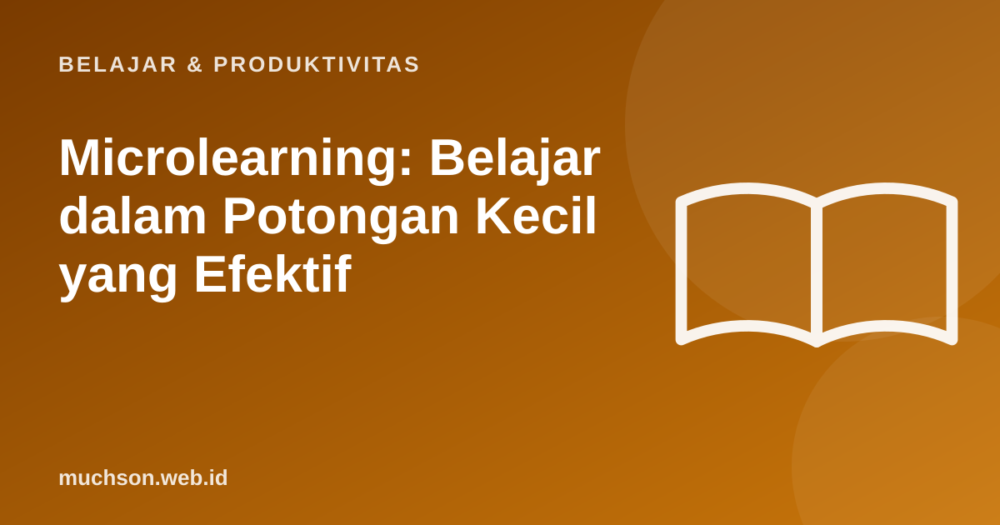

Microlearning: Belajar dalam Potongan Kecil yang Efektif
Tidak semua orang punya waktu satu jam untuk belajar, tetapi banyak yang punya lima menit. Microlearning memanfaatkan itu: potongan singkat, satu tujuan, langsung bisa dipraktikkan. Namun potongan kecil saja tidak cukup, rancangannya yang menentukan.
Oleh Muhammad Muchson Attoyibi··1 menit baca

Apa itu microlearning?
Microlearning adalah pendekatan penyampaian materi dalam unit kecil, biasanya beberapa menit, yang berfokus pada satu tujuan belajar. Bentuknya bisa video pendek, infografik, kuis singkat, atau latihan satu langkah. Pendekatan ini banyak dipakai pada pelatihan karyawan karena fleksibel dan mudah diakses dari ponsel.
Hitung pembagian materi
Prinsip merancang
Batasannya
Microlearning bagus untuk keterampilan spesifik dan penyegaran, kurang cocok sebagai satu-satunya cara mengajarkan topik yang saling bergantung dan membutuhkan pemahaman mendalam. Gabungkan dengan sesi latihan dan proyek.
Tanya jawab
Berapa durasi ideal modul mikro?
Umumnya 3 sampai 10 menit, bergantung pada materi. Yang penting satu tujuan yang jelas.
Apakah cocok untuk pelajar sekolah?
Bisa sebagai penguat dan latihan harian, dipadukan dengan pembelajaran utama bersama guru.
Bagaimana mengukur keberhasilannya?
Lihat penyelesaian, skor latihan, dan penerapan di pekerjaan atau tugas nyata, bukan hanya jumlah penayangan.
Bagikan:
Muhammad Muchson AttoyibiSoftware Engineer dan Academic Trainer di Malang. Menulis tentang teknologi, belajar, dan hal praktis sehari-hari. Tentang saya